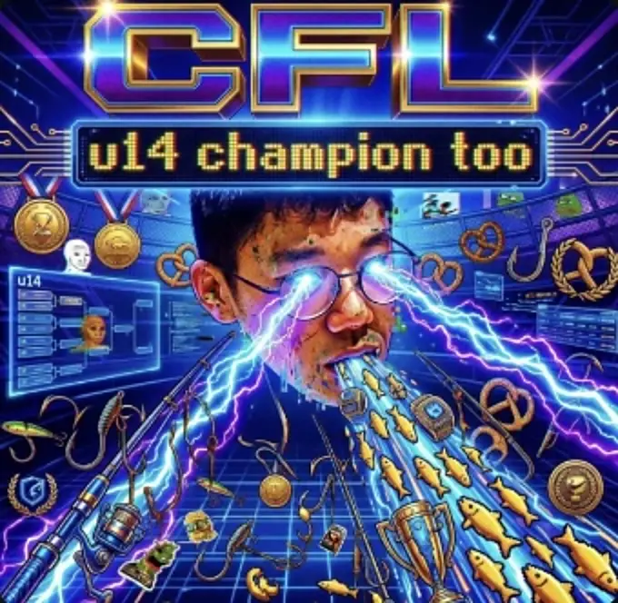
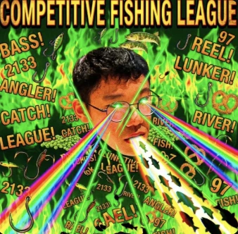
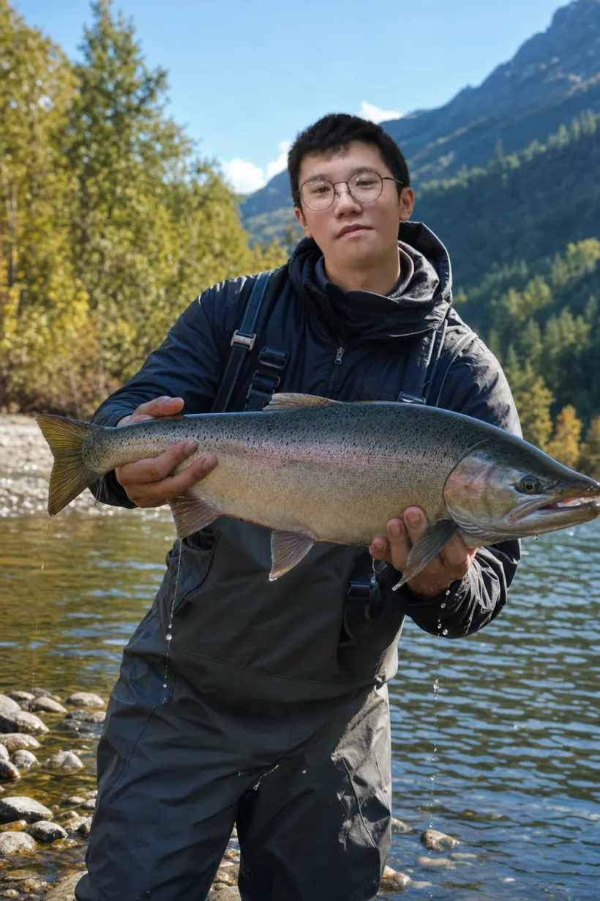
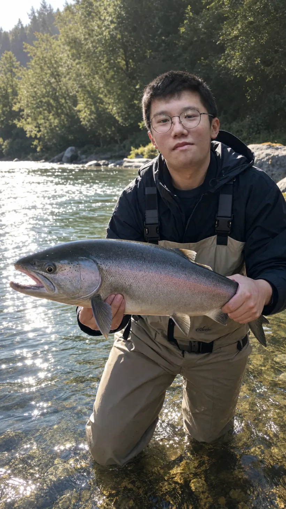
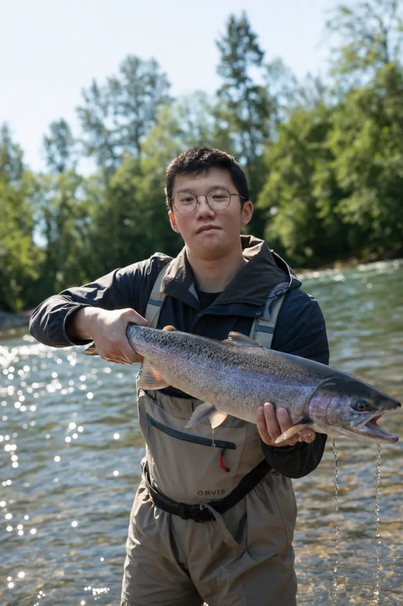
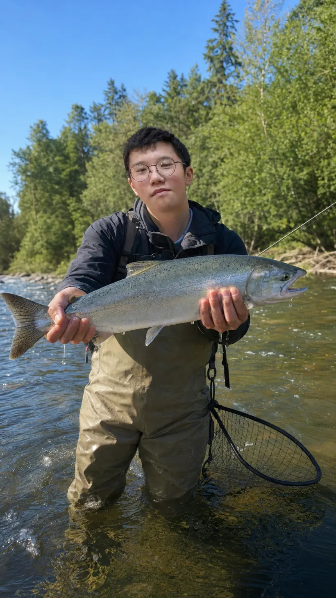

The plan of the league
- The axis
- One league, run end to end. Everything answers to the same line.
- The bosquets
- Every outing its own green theatre. What happens there is entered in the record.
- The fountains
- The standing, read at a glance. The higher the jet, the better the season.
- The statue
- One champion holds the head of the garden. He stays there until somebody takes it.
At the head of the garden

Liam
Reigning Champion

The garden is laid out around whoever is winning it. At present, that is Liam — and the whole axis points at him until it doesn't.
The green theatres
Off the main axis, the hedges open into rooms. This is what the league looks like from inside one.




The order of the fountains
Every angler is given a basin. The season decides how high it plays.
| № | Angler | Points | |
|---|---|---|---|
| 1 | A. Whitlock | 412 | |
| 2 | D. Mercer | 388 | |
| 3 | S. Kane | 351 | |
| 4 | R. Okonkwo | 329 | |
| 5 | J. Halloran | 296 | |
| 6 | T. Brennan | 264 | |
| 7 | M. Fairweather | 231 | |
| 8 | C. Dunne | 187 |
Carry it down the canal
A league is only as big as the number of people who have heard of it. Send this to somebody who owns a rod.